Price it. Build it.
Bill it. Own it.
Job management for residential general contractors, the shop running a handful of remodels, additions and custom homes at once. It runs on your own computer, keeps working with no internet, and keeps your numbers in one file that belongs to you.

Open it and see what needs you.
The overdue pay application. The two change orders waiting on a signature. The jobs running hot. One screen, ranked, before the first coffee is gone.
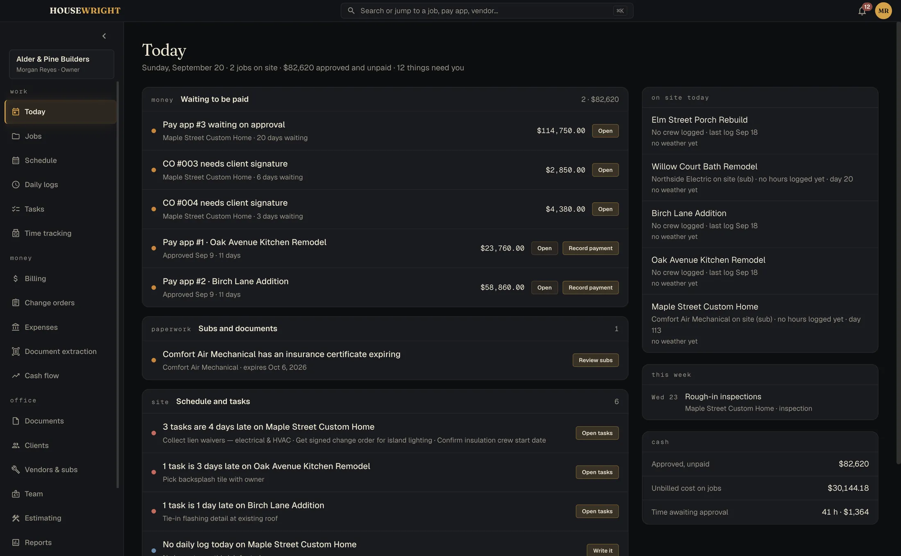
Built around the way money moves on a job.
Price it
Build the estimate from your own materials catalog and crew rates, line by line, with overhead, profit and contingency where you can see them. Approve it and it becomes the budget and the schedule of values.
- Your own catalog of materials and crew rates
- Good, better, best pricing per material
- Proposals with your terms, signed from a link, no outside service

Turn it into a job
Every job gets a hub: money, schedule, daily logs, tasks and punch, documents and photos, selections. The list tells you the one thing each job needs next.
- Contract value, percent billed and what's next, at a glance
- Clients and subs in one place, with 1099 tracking
- Selections and allowances per job
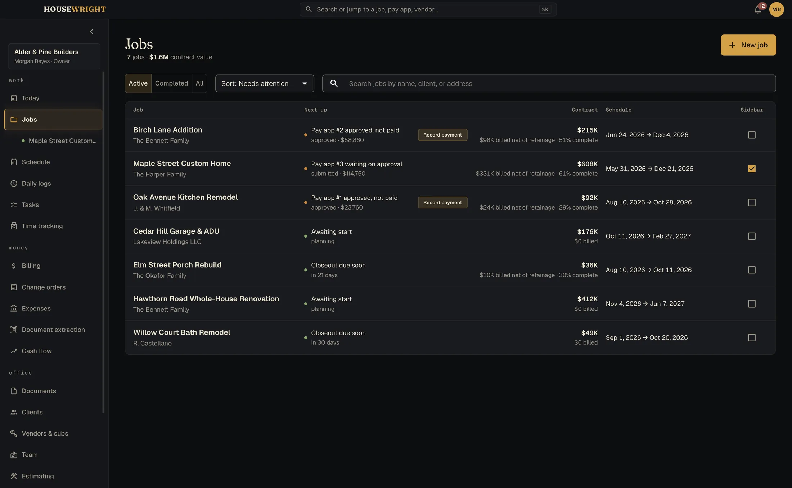
Run the schedule
A Gantt timeline per job and one across every job. Tell the subs when things move: each gets an email with a calendar file.
- Portfolio timeline across all active jobs
- Tasks and punch lists with assignees and due dates
- Permits tracked beside the schedule

Keep the record
One line per day per job: weather, crew count, work performed, delays, visitors. Crew hours arrive from the phones; only approved time becomes billable.
- Daily logs you'll be glad you kept
- Time tracking with cost rate and billable rate kept apart
- Photos and documents filed to the job, searchable
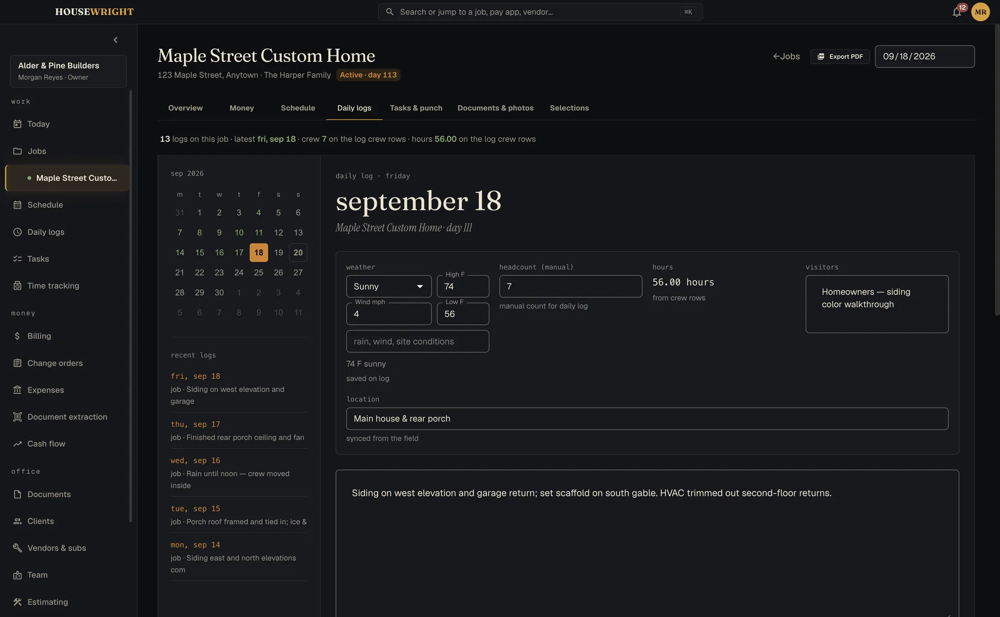
Bill it
The schedule of values, the continuation sheet, the application for payment, retainage, lien waivers. Approved change orders carry through to the budget and the contract sum. If a sheet doesn't foot, it says by how much and won't export a wrong number.
- Applications for payment, architect-ready, PDF and spreadsheet
- Change orders from quote to signature to contract
- Lien waivers generated against the pay app

Know where you stand
Job profitability, cost against budget, work in progress, receivables aging, cash flow. Printable, exportable, and built from the same numbers you billed from.
- Expenses with receipts read from PDFs
- Cash-flow forecast by period
- QuickBooks Online push, one way, never pulls

Columns that foot. To the penny, every time.
Scheduled value, from previous applications, this period, materials stored, total completed, balance to finish, retainage. The sheet your architect expects, without the spreadsheet you dread.
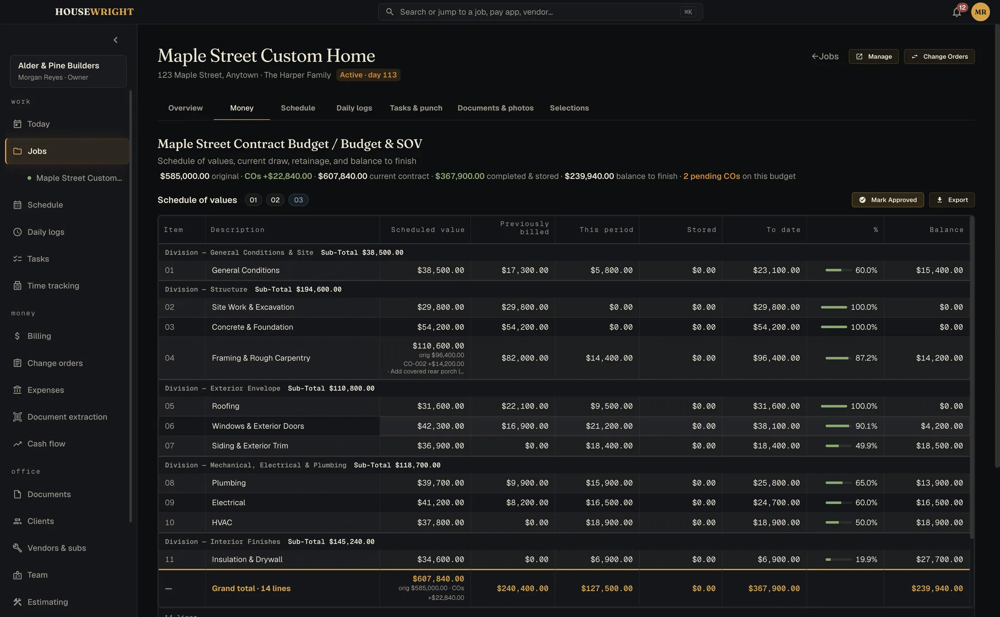
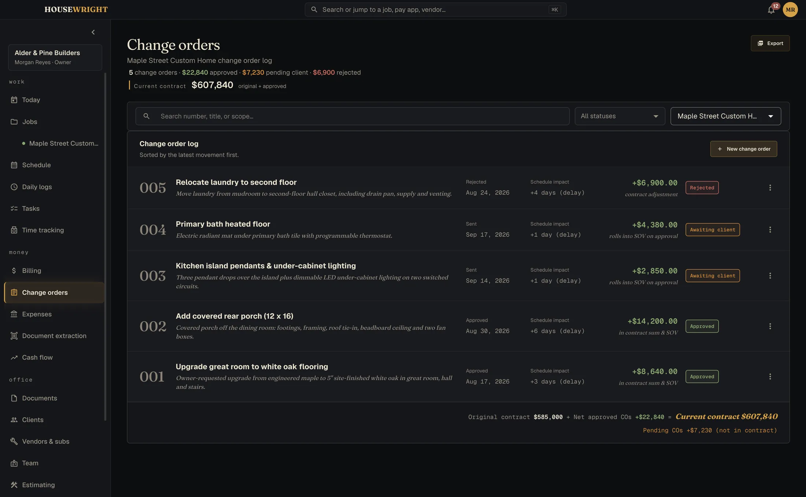
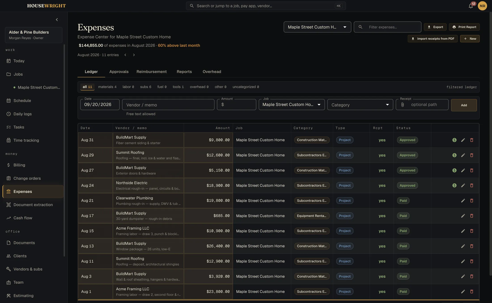
Eight more screens, while you're here.
Every screenshot on this site shows sample jobs for a made-up builder. Scroll sideways.
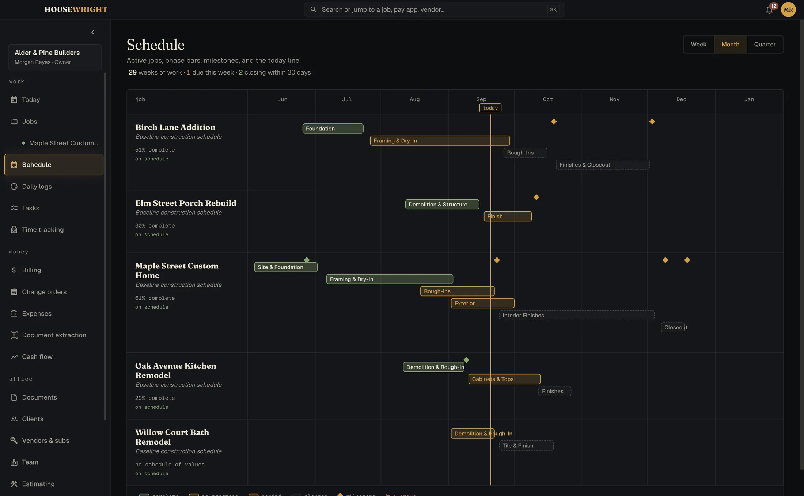
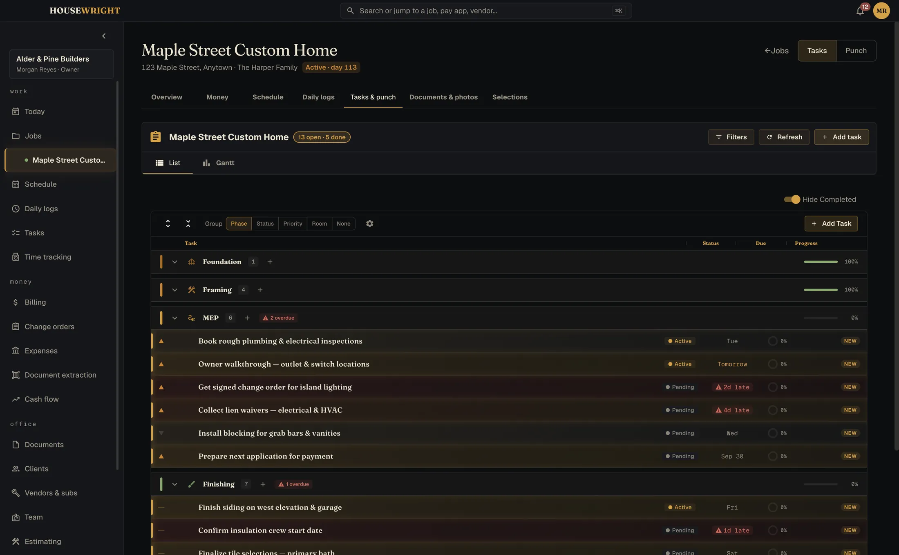
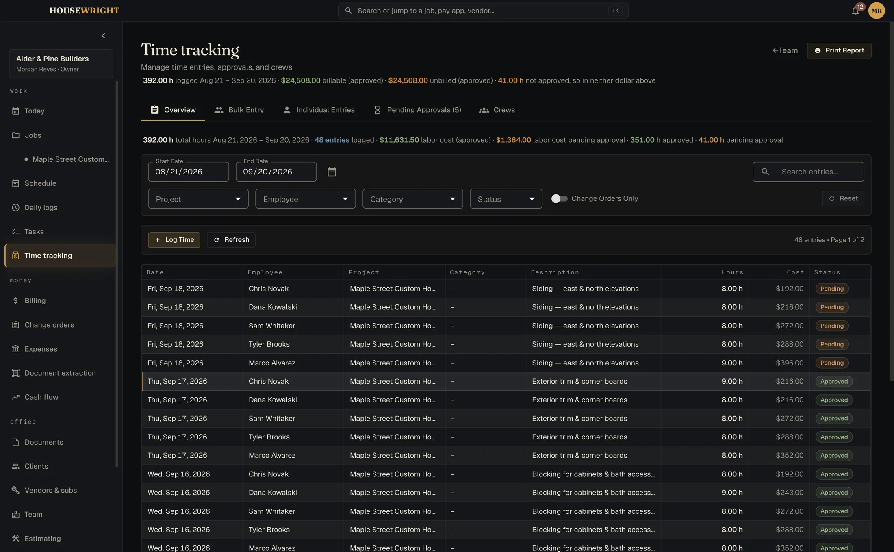
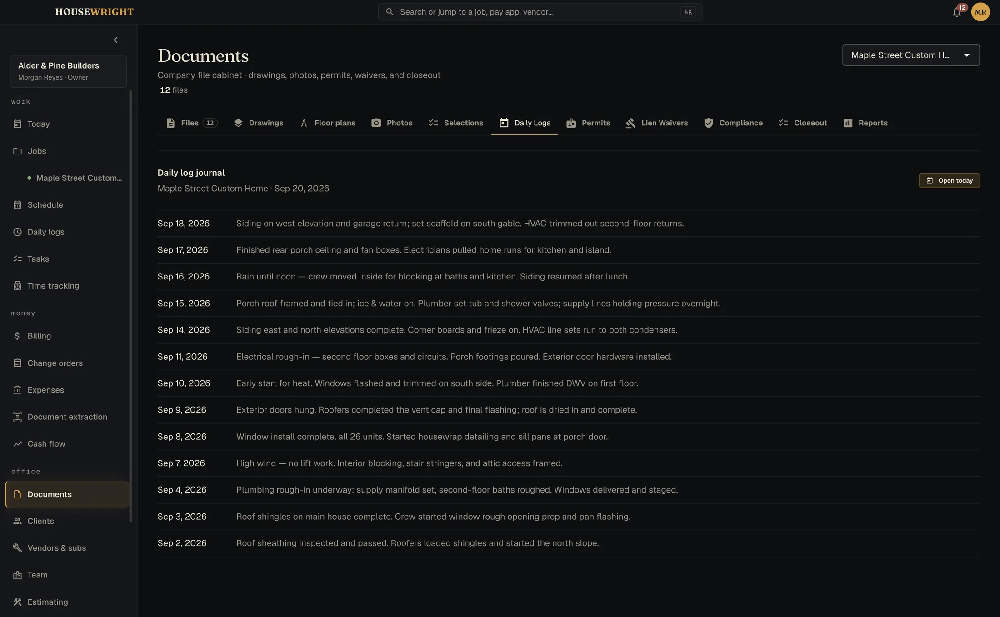
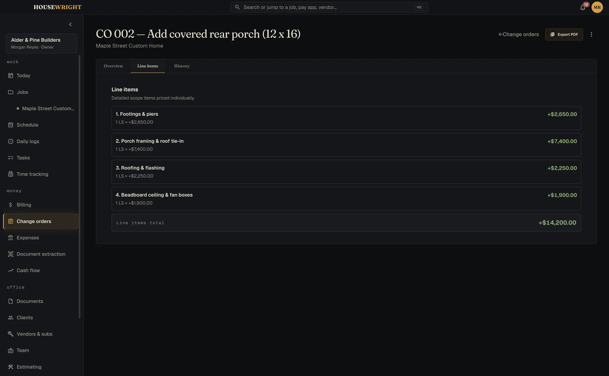
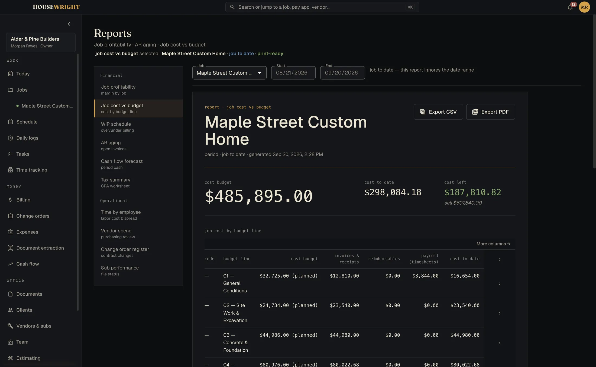
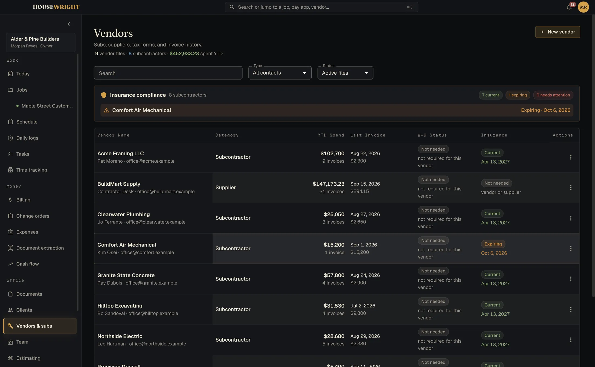
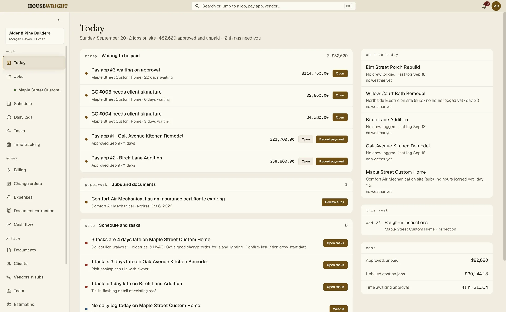
Your data has a street address. Yours.
Housewright is local-first. Your whole book is a single file on your own computer, not a row in somebody's cloud. Job sites don't have Wi-Fi; this doesn't need it.
Works offline
Every screen, every report, every export. Even the fonts ship inside the app so a launch never has to phone anywhere.
Backs itself up
Daily or weekly on a schedule, and always before an update or a restore. One archive holds the database, the documents and your settings.
Office and field, one app
Roles decide who sees the money. Field accounts don't.
The crew's phones, if you want them
Pair the Companion by scanning a code. Hours, logs, photos and floor plans come in; drawings and documents go out. Sync is an optional monthly service: your data stays on your machines and crosses our relay only as sealed envelopes we can't open. How it works
Share with the client
A read-only link to the schedule, a billing summary, photos and the documents you choose. It expires on its own.
No payment processing
On purpose. We never hold your money.
One email when each one ships.
Calc is first, then Desktop and the Companion. We'll confirm you're on the list, then write when there is something you can install. No newsletter.